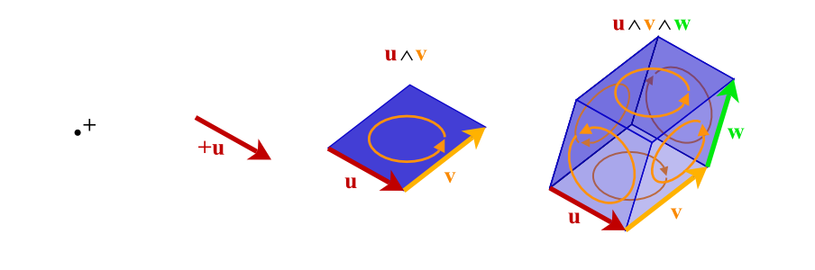

clifford: Geometric Algebra for Python¶
In [1]: from clifford.g3 import * # import GA for 3D space
In [2]: from numpy import e,pi
In [3]: a = e1 + 2*e2 + 3*e3 # vector
In [4]: R = e**(pi/4*e12) # rotor
In [5]: R*a*~R # rotate the vector
Out[5]: (2.0^e1) - (1.0^e2) + (3.0^e3)
This module implements Geometric Algebras (a.k.a. Clifford algebras). Geometric Algebra (GA) is a universal algebra which subsumes complex algebra, quaternions, linear algebra and several other independent mathematical systems. Scalars, vectors, and higher-grade entities can be mixed freely and consistently in the form of mixed-grade multivectors.
{kind=link}
If you think Geometric Algebra looks interesting and want to learn more, check out the cambridge groups page, and here are some great introductory textbooks!
- Geometric Algebra for Physicists, by Doran and Lasenby
- Geometric Algebra for Computer Science, by Dorst, Fontijne and Mann
- New Foundations for Classical Mechanics, by David Hestenes
Docs¶
- Tutorials
- Installation
- Quick Start (G2)
- The Algebra Of Space (G3)
- Rotations in Space: Euler Angles, Matrices, and Quaternions
- Conformal Geometric Algebra
- Space Time Algebra
- Interfacing Other Mathematical Systems
- Predefined Geometric Algebras
- Writing high(ish) performance code with Clifford and Numba via Numpy
- Example 1 Interpolating Conformal Objects
- Example 2 Clustering Geometric Objects
Links¶
- Symbolic geometric alebra module for python: https://github.com/brombo/galgebra
- Cambridge GA group: http://www.mrao.cam.ac.uk/~clifford
- David Hestenes’ (The man) website: http://geocalc.clas.asu.edu/
- GAOnline - Conformal Geometric Algebra visualiser: http://gaonline.azurewebsites.net/